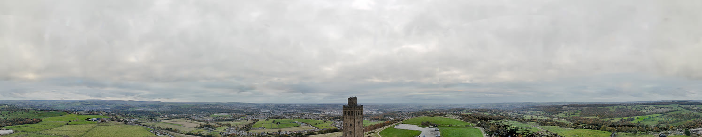
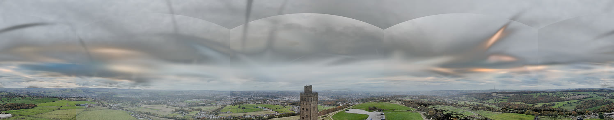
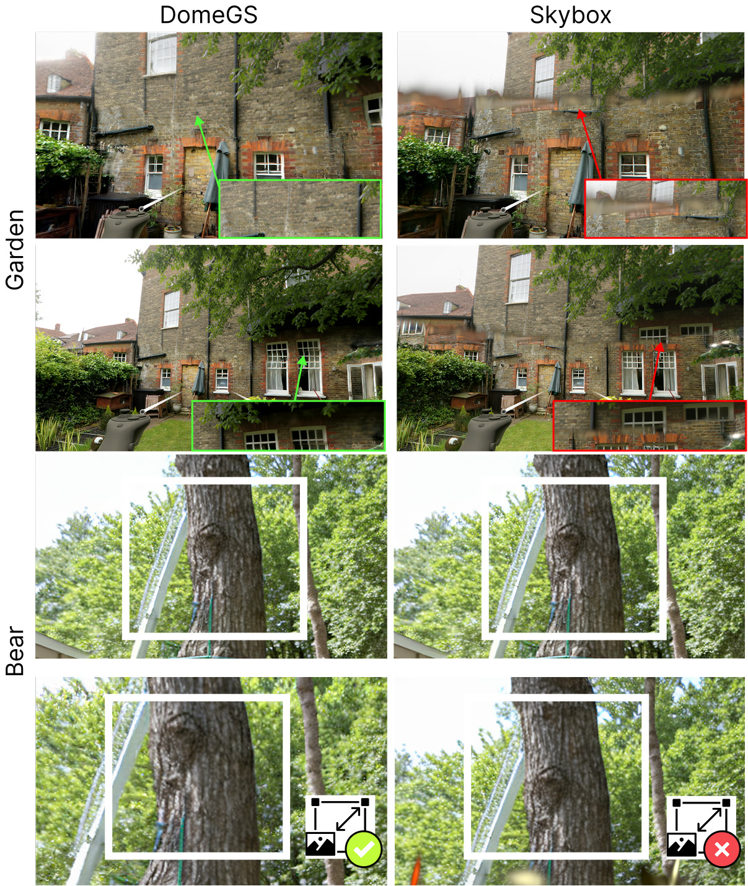
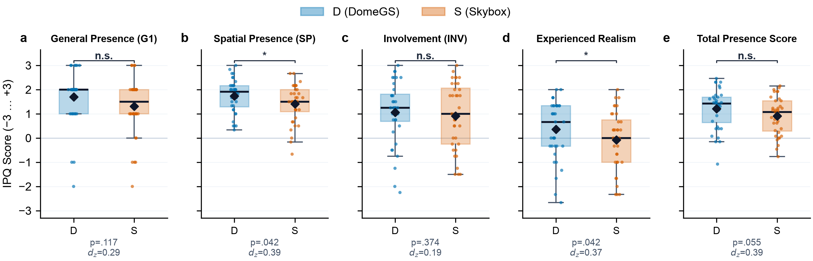
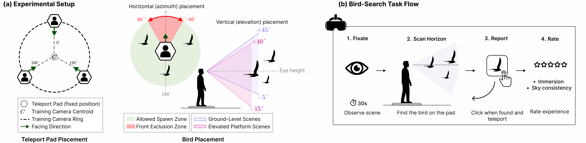

The growing need for high-quality 3D content remains among the most prevalent challenges in virtual reality (VR). Recently, novel view synthesis techniques have enabled rapid content creation, with 3D Gaussian Splatting (3DGS) emerging as one of the most promising methods for generating high-fidelity 3D scenes. However, using 3DGS to reconstruct unbounded outdoor scenes can leave horizons incomplete due to missing data or a lack of distant geometric constraints. Such incompleteness can break immersion, compromising VR’s core characteristic. A typical workaround in traditional VR systems is a textured cube (skybox) or sphere (skydome) surrounding the environment to create the illusion of a distant background. However, these approaches struggle to blend seamlessly with the reconstructed 3DGS geometry. To address these issues, we introduce the DomeGS framework, which incorporates the skydome concept not as a flat background shell, but as a part of the reconstructed Gaussian Splatting 3D scene. By integrating the horizon and sky into the 3DGS representation, our method provides a unified, scene-consistent environment bridging foregrounds and backgrounds for greater realism. Experimental evaluation with N=36 users demonstrates that DomeGS significantly increases spatial presence (p=0.042) and realism (p=0.042) compared to the skybox baseline.
Rather than compositing a flat 2D backdrop, DomeGS adds the far field to the Gaussian representation itself, so the near-field scene and the sky respond together as the user moves.
We render a partial 360° panorama from the reconstructed scene, then fill the missing sky and horizon with a 360°-aware generative model (FLUX.2-klein + ERP LoRA).
We estimate the shell radius and optimal base pitch, use “look-back” probe cameras to remove backside floaters, and render new upward, horizontal and downward training views.
We seed new Gaussians on a finite-radius sphere and fine-tune them together with the cleaned scene on both the original and the added views. The output is a single 3DGS asset.
Panoramas rendered from the reconstructed scene, before and after DomeGS completes the background. Drag to look around, scroll or pinch to zoom, and move the white divider to compare.
Black regions in the “before” panoramas are parts of the sphere that the original capture never saw. The 360°-aware outpainting fills them, and DomeGS then bakes the result into the scene as Gaussians.
VR captures from the user study. A skybox stays fixed at infinity, so it slides against the foreground as you move, and its seams and color shifts show. The DomeGS sky is part of the scene and keeps realistic parallax.
Click the video, or press ← / →, to switch between Skybox and DomeGS at the same point in the walkthrough. Auto switches between them every 2 s. The clips are separate headset recordings, so the viewpoints match closely but not frame for frame.
The same equirectangular view rendered three ways. Drag the handle across.



DomeGS (left) vs. Skybox (right), before and after the user moves. In Garden, the static skybox drifts out of alignment with the foreground. In Bear, the skybox tree doesn't grow as the user gets closer. Click to enlarge.
A within-subjects VR study with 36 participants. Each person saw 4 scenes × 2 conditions and did a bird-search task while giving in-task ratings, then filled in IPQ, NASA-TLX and SSQ questionnaires.
Holm-adjusted two-tailed exact binomial tests, N = 36.
Qwen3-VL-32B rated rendered views from 1 to 5. Pick a scene:

Spatial presence and experienced realism are significantly higher with DomeGS. General presence, involvement and the total score do not differ significantly.

Bird-search task design. Search time and head-path length were comparable, NASA-TLX workload was equivalent (TOST), and simulator sickness stayed mild and did not differ between conditions (SSQ total 16.5 vs. 17.9).
@article{pechko2026domegs,
title = {DomeGS: Perceptually Consistent Background Completion for
Unbounded 3D Gaussian Splatting in Virtual Reality},
author = {Pechko, Anastasiya and Szyma{\'n}ska, Agata and Borycki, Piotr and
Szelewska, Joanna and Mnich, Micha{\l} and Tadeja, Slawomir Konrad and
Spurek, Przemys{\l}aw},
journal = {arXiv preprint arXiv:2610.37172},
year = {2026}
}
The work of P. Spurek and A. Pechko was supported by the project “Effective rendering of 3D objects using Gaussian Splatting in an Augmented Reality environment” (FENG.02.02-IP.05-0114/23), carried out within the First Team programme of the Foundation for Polish Science and co-financed by the European Union under the European Funds for Smart Economy 2021–2027 (FENG). The work of P. Borycki was supported by the National Centre of Science (Poland), Grant No. 2025/57/N/ST6/04389. The work of J. Szelewska was supported by the National Centre of Science (Poland), Grant No. 2025/57/N/ST6/04390.